Cover photo for Alarms and Events Visualization module — stock image of people working at computers in a training/classroom setting, used as a decorative module header
Module 5 — Alarms and Events Visualization | Pages 293–320
Visualization
Module Objectives
Provide a brief review of the concept of alarms and events
Introduce how System Platform handles alarms and events
Introduce the Alarm Border animation and how to customize Alarm Border Styles
Introduce Alarms aggregation and Alarm Severity
Introduce Alarm Shelving features
What are Alarms and Events?
System alarm and event capabilities allow users to automate the detection, notification,
historization, and viewing of the application (process) alarms and events, or system/software
alarms and events. Alarms and events occur in the runtime system. Events and alarms are
different and the system distinguishes between the two. Alarms represent the occurrence of a
condition that is considered abnormal in nature and requires immediate attention from a user. An
event is an occurrence of a condition at a certain point in time.
Examples of alarms include:
A process measurement that has exceeded a predefined limit, such as a high temperature
limit
A process device that is not in the desired state, such as a stopped pump that should be
running
Examples of events include:
The system engineer has changed the runtime system configuration, such as the
deployment of a new AutomationObject
A Platform has come back online after it had a failure or shutdown
The following items are not considered alarms or events:
Configuration actions within the Galaxy Repository, such as an import or a checkout
A message sent to the system logger (SMC Logger)
Note: Sometimes certain software events may log a message, in addition to generating
an event. Logger messages are not events.
How Does System Platform Handle Alarms?
The Platform as an Alarm Provider
A Platform can act as a single Alarm Provider that provides alarms to the InTouch Distributed
Alarm subsystem. A Boolean check box is provided in the Platform AutomationObject indicating
whether or not it subscribes to Areas for alarm and event reporting.
This section provides a brief overview of alarms and events and explains how System Platform
handles them. An introduction to the Alarm Border animation, Alarms aggregation, severity, and
shelving is also provided.
The Platform is responsible for routing all alarms and events for all Areas, which have been
subscribed to by that Platform, to the distributed alarming infrastructure. An alarm generated by
Application Server contains fields that are generated by the alarm functions inside the
AutomationObject. Those fields are mapped to fields in InTouch as follows:
Alarms:
InTouch as an Alarm Consumer
The InTouch Alarm Client can be configured to subscribe to alarms and events generated by
Alarm Providers. The Alarm Provider is specified by providing the node name and the name of the
provider. For System Platform, only one provider exists per Platform (node). In addition, the
InTouch Alarm client can be configured to subscribe to only selected Alarm Areas for the provider
based on its query filters.
Alarm Acknowledgment from Distributed Alarming
The InTouch Alarm Client can acknowledge unacknowledged alarms that are reported by the
Platform. The Platform receives the acknowledge request and forwards it to the target, which is the
AutomationObject acknowledge attribute for the alarm. Security is used as part of this set (it is a
UserSetAttribute). An optional comment can be entered, when an acknowledgment is requested.
Alarm Enable/Disable
The InTouch Alarm Client can enable/disable alarming on any AutomationObject. The Platform
receives the enable request and forwards it to the target, the AutomationObject AlarmMode
attribute. Security is used as part of this set (it is a UserSetAttribute).
Field
InTouch Distributed Alarms Mapping
Timestamp of alarm event
Time
Tagname
Name
Common message text string
Comment
Area
Alarm group
Common name for alarm primitive (for example, “PV.HiAlarm”)
Alarm Type (string)
New alarm state (for example, ACK or RTN)
State
Priority = 1-999
Priority
Value (mxValue)
Value
Limit (mxValue)
Limit
Category
Class
Category
SubClass
How Does System Platform Handle Events?
A Platform is an Event Provider that provides events to the InTouch Distributed Alarm subsystem.
This provider routes all events that are generated by AutomationObjects hosted by that Platform to
the Application Server. The following tables define how fields in those events are mapped to fields
in the Distributed Alarm subsystem.
System Events:
Security Audit (includes User Data Change) Events:
Field
Distributed Alarm Subsystem Mapping
Type (or Category) = System
Type = SYS
Timestamp
Time
Tagname
Name
Tag description
Comment
Area
Alarm group
System event description (“started”, “stopped”)
Event Type – if string, or use Comment field
N/A
State = none (preferred) or “UNACK_RTN”
N/A
Priority = 1
N/A
Provider = Galaxy
N/A
Event Class = EVENT
Field
Distributed Alarm Subsystem Mapping
Type = Operator Change
Type = OPR
Timestamp
Time
Tag.primitive.attribute
Name
Tag description
Comment
Area
Alarm group
View engine name
N/A
Operator 1 name
RequestingEngineName + Operator name
Operator 2 name
N/A
Old value
Limit
New value
Value
N/A
State = none (preferred) or “UNACK_RTN”
N/A
Priority = 999
N/A
Provider = Galaxy
N/A
Event Class = EVENT
Application Change Events:
Alarm Queries
Alarm queries are used within Alarm Clients to retrieve real-time alarm information and event
reports from the Galaxy.
The fully qualified syntax of an alarm query to retrieve a single alarm within an object as reported
by a specific WinPlatform object is:
\\nodename\Galaxy!area!object.attribute
If the WinPlatform object that serves as an alarm provider is located in the local computer, the
following syntax of the alarm query is allowed:
\Galaxy!area!object.attribute
The following table lists different variants of the alarm query and their return data:
Field
Distributed Alarm Subsystem Mapping
Type = Data Change
Type = LGC
Timestamp
Time
Tag.primitive.attribute
Name? or name + comment?
Tag description
Comment
Area
Alarm group
View engine name
Platform (the PC’s node name)
Old value
Limit
New value
Value
N/A
State = none (preferred) or “UNACK_RTN”
N/A
Priority = 999
N/A
Provider = Galaxy
Alarm Query
Results
\\nodename\Galaxy!area
All alarms and events from the area object itself.
All alarms and events from all the objects hosted in the area.
All alarms and events from all subareas contained in the area,
as configured in the Model view of the IDE.
All alarms and events from all the objects hosted in the
contained areas.
\\nodename\Galaxy!area!object
All alarms and events from the object itself.
\\nodename\Galaxy!winplatform
All alarms and events from the WinPlatform object itself.
\\nodename\Galaxy!engine
All alarms and events from the engine object (AppEngine or
ViewEngine) itself.
\\nodename\Galaxy!dio
All alarms and events from the device integration object itself.
Use of a Wildcard
The asterisk (*) is a wildcard character that may be used to substitute any character or characters
in the object.attribute part of the alarm query.
The following table lists different examples on the use of the wildcard character on alarm queries
and their return data:
Only one wildcard character is allowed per alarm query.
Using Multiple Queries
Multiple queries can be submitted by an Alarm Client. For example, if Area1 and Area2 are two
mutually exclusive areas, the following two queries can be submitted at once:
\Galaxy!Area1 \Galaxy!Area2
By using multiple queries, it is possible to retrieve alarms from different nodes (WinPlatform
objects) at the same time, for example:
\\NodeNameA\Galaxy!Area1 \\NodeNameB\Galaxy!Area2
The Alarm Extension
An alarm extension can be added to a template or instance Boolean attribute. If added to a
template attribute, the alarm extension is automatically locked in derived objects. Attribute arrays
cannot be extended.
In the Alarm message box, browse and select an existing attribute or type a text string as an alarm
message. This text string appears in the InTouch alarm view.
The Active alarms state list can show the customized items specified in the Boolean label
extension area. It allows the selection of the state that triggers the alarm. If a value is not specified
in the Boolean label extension area, True and False are displayed.
Alarm Query
Results
\\nodename\Galaxy!area!object.*
All alarms and events from a specific object within an
area.
\\nodename\Galaxy!area!*.attribute
All alarms and events from all the objects in the area
for the specific attribute.
\\nodename\Galaxy!area!objectprefix*
All alarms and events from objects whose name
begins with the specific prefix.
Alarm Border Animation
Alarm Border animation shows a highly visible border around a symbol or graphic element when
an alarm occurs. The color and fill pattern of the border indicates the severity and current state of
the alarm. Plant operators can quickly recognize alarm conditions when Alarm Border animation is
used.
Alarm Border animation also shows an indicator icon at the top-left corner of the border around a
closed graphic element. For open pie or arc graphic elements, the indicator icon is placed at the
top-left most location of the start and end points.
Alarm severity (1-4) or the current alarm mode (Shelved, Silenced, Disabled) appear as part of the
indicator icon. The indicator icon can be shown or hidden as a configurable option of Alarm Border
animation.
Alarm Border animation can be applied to all types of symbols, except embedded symbols and
nested groups. Alarm Border animation can also be applied to graphic elements and grouped
elements.
Understanding the Behavior of Alarm Border Animations
Alarm Border animations appears around a graphic element based on the current state of the
object’s aggregated alarm attributes. The appearance of the alarm border itself reflects the current
alarm state and the user’s interaction with the alarm.
A symbol’s process value transition into an alarm state: Alarm Border animation appears
around the symbol based on alarm severity with blinking
The user acknowledges an alarm with the process value still in an alarm state: Alarm
Border animation appears around the symbol without blinking
The alarm value returns to normal without the user acknowledging the alarm: Alarm
Border animation remains around the symbol in a defined Return to Normal visual style
without blinking
The alarm value returns to normal and the user acknowledges the alarm: Alarm Border
animation no longer appears around a symbol
The user suppresses an alarm: Alarm Border animation remains around the symbol in a
defined Suppressed visual style; however, an alarm indicator icon does not appear for a
Suppressed state
Note:
Alarm Border animation is not used for alarms in an inhibited or a shelved state.
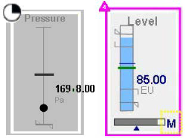
If a new alarm condition occurs when Alarm Border animation appears around a symbol,
the animation updates to show the new alarm state
In the case of alarms aggregation, Alarm Border animation shows the highest current
alarm state
The Alarm Border animation can be configured by selecting Alarm Border from the list of
Visualization animations. The Alarm Border pane contains mutually exclusive fields to set the
referenced attributes for aggregate or individual alarms.
For aggregated alarms, users specify the Alarm Border animation by entering an attribute or
object name in the Use Standard Alarm-Urgency References field of the Alarm Border pane.
The selected object attributes map to the following aggregated alarm attributes:
AlarmMostUrgentInAlarm: Indicates the InAlarm status (True/False) of the highest
priority current alarm
AlarmMostUrgentAcked: Indicates the acknowledgment status (True/False) of the
highest priority current alarm
AlarmMostUrgentMode: Indicates the mode (Enabled/Silenced/Disabled) of the highest
priority current alarm
AlarmMostUrgentSeverity: Indicates the severity as an integer (1-4) of the highest
priority current alarm; if no alarms are in an InAlarm state or waiting to be acknowledged,
the value is 0
AlarmMostUrgentShelved: Indicates the shelved status (True/False) of the highest
priority current alarm
To set the Alarm Border animation for individual alarms, users specify references to the following
alarm attributes or tags:
InAlarm attribute
Acked attribute
Mode attribute
Severity attribute
Shelved attribute
Alarm Border animation subscribes to these attributes. Based on the alarm state of these
attributes, Alarm Border animation is applied to the graphic element in runtime.
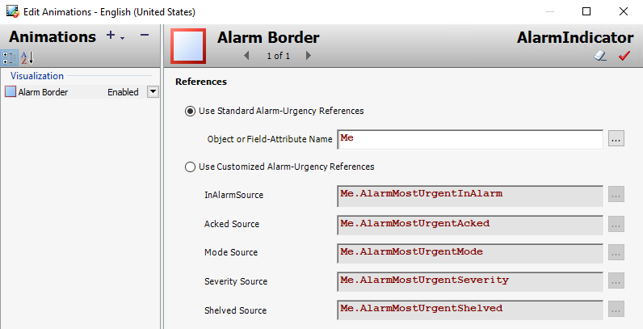
Configuring Optional Alarm Border Animation Characteristics
Users can complete a set of optional tasks to customize the appearance of an Alarm Border
animation.
Changing the Alarm Border Indicator Icon
The Alarm Border animation shows an indicator icon at the top-left corner of the border with alarm
severity as a number from 1 to 4. Other indicator images represent alarm suppressed, silenced
and shelved modes.
A default Alarm Border indicator image is assigned to each alarm mode and severity level. The
default images appear in the Image column of the Alarms and events dialog box. The images are
saved in an XML file located in the global data cache.
The default Alarm Border indicator images can be replaced by custom images. Supported image
file types include:
.bmp
.gif
.jpg
.jpeg
.tif
.tiff
.png
.ico
.emf
At runtime, the Alarm Border animation reads the XML file in the global data cache. If images are
not available in the XML file, an Alarm Indicator does not appear during the animation.
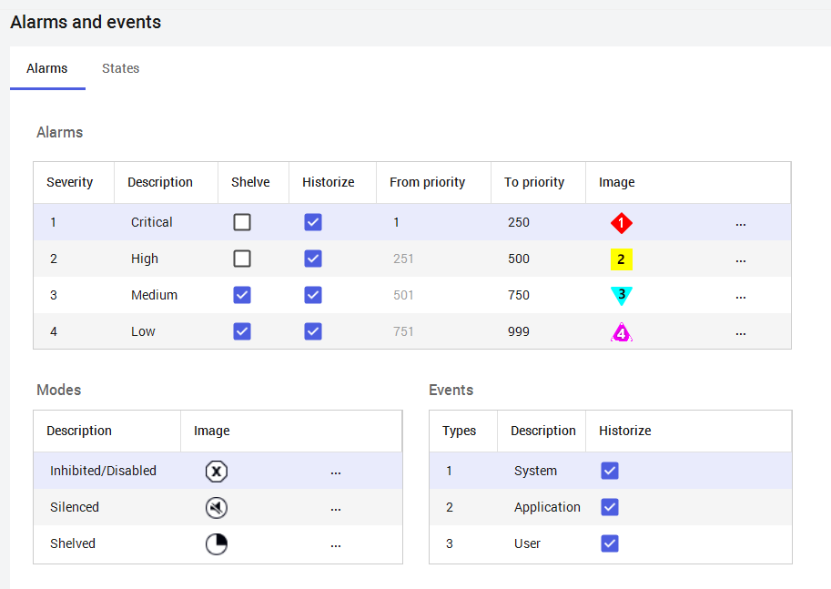
Modify Alarm Border Animation Element Styles
The color and fill pattern of alarm borders are set by the Outline properties of a set of AlarmBorder
Element Styles. The following table shows the Element Styles applied to Alarm Border animations
by alarm severity and alarm state.
The assignment of these Element Styles to alarm conditions cannot be changed. Only the
assigned Element Style's Outline properties can be changed to modify the line pattern, line weight,
and line color of alarm borders.
Aggregating Alarm State Information
Alarm aggregation provides an efficient way to identify whether any alarms on an object are
currently in the InAlarm state, the overall status of the most important of those alarms, and how
many alarms are active at each level of alarm severity and at each level of containment. This
makes it possible to follow a trail from one level to the next to find the underlying cause of a
complex object’s alarms.
You can view alarm aggregation statuses in runtime clients, such as Object Viewer. You can model
alarm aggregation in Managed InTouch applications by using animations, such as the Alarm
Border animation with Situational Awareness Library symbols or with symbols.
Alarm aggregation functionality can be described for an:
Object
Area
Attribute
Alarms are aggregated if they are in one of three states:
UNACK_ALM
ACK_ALM
UNACK_RTN
Alarms in the ACK_RTN state are not aggregated. Alarms in silenced mode are aggregated, even
though they do not appear in the runtime client.
Alarm Severity
Alarm State
Element Style
1
UnAcknowledged
AlarmBorder_Critical_UNACK
1
Acknowledged
AlarmBorder_Critical_ACK
1
Return To Normal
AlarmBorder_Critical_RTN
2
UnAcknowledged
AlarmBorder_High_UNACK
2
Acknowledged
AlarmBorder_High_ACK
2
Return To Normal
AlarmBorder_High_RTN
3
UnAcknowledged
AlarmBorder_Medium_UNACK
3
Acknowledged
AlarmBorder_Medium_ACK
3
Return To Normal
AlarmBorder_Medium_RTN
4
UnAcknowledged
AlarmBorder_Low_UNACK
4
Acknowledged
AlarmBorder_Low_ACK
4
Return To Normal
AlarmBorder_Low_RTN
All
Inhibited
AlarmBorder_Inhibited
All
Shelved
AlarmBorder_Shelved
All
Suppressed
AlarmBorder_Suppressed
All
Silenced
AlarmBorder_Silenced
Alarm Aggregation Attributes
A set of five attributes provide runtime aggregated alarm status information. These attributes are
available for all objects. If alarm aggregation is enabled on the area, the following attributes
aggregate their respective alarm status values for the area, for all sub-areas, contained objects,
and their descendants assigned to the area. If alarm aggregation is disabled, these attributes
remain at their default values. Alarm aggregation attributes on objects behave similarly to alarm
aggregation attributes specific to Analog Field attributes.
Attribute
Description
Runtime Access
Array of counts of all alarms that are in
UNACK_ALM, ACK_ALM, or
UNACK_RTN states on the object,
aggregated by severity levels 1-4.
Read-Only
TRUE (default) indicates that no alarms
are in the InAlarm state or waiting to be
Acked.
A value of TRUE also indicates that the
most urgent alarm(s) on the object and its
descendants in the InAlarm state have
been acknowledged, whether or not they
are currently InAlarm.
Read-Only
FALSE (default) indicates that no alarms
are in the InAlarm state or waiting to be
Acked.
A value of FALSE indicates whether the
most urgent alarm(s) on the object and its
descendants are in the InAlarm state,
whether or not they have been
acknowledged.
Read-Only
The AlarmMode of the most urgent
alarm(s) on this object and its
descendants. If no alarms are in the
InAlarm state or waiting to be Acked, the
value is the same as the AlarmMode for
the object.
Read-Only
Severity level expressed as an integer (1-
4) of the most urgent alarm(s) on the object
and its descendants. If no alarm is in the
InAlarm state or waiting to be Acked, the
value is 0 (zero).
Read-Only
Configuring Alarm State Aggregation
Configuring alarm state aggregation consists of normal alarm configuration procedures, plus an
added step of enabling the aggregation feature on each relevant Area object.
Check the Aggregate Alarms check box in the Area object configuration editor to enable alarm
aggregation. This sets the value of the AlarmAggregationStateCmd attribute to True.
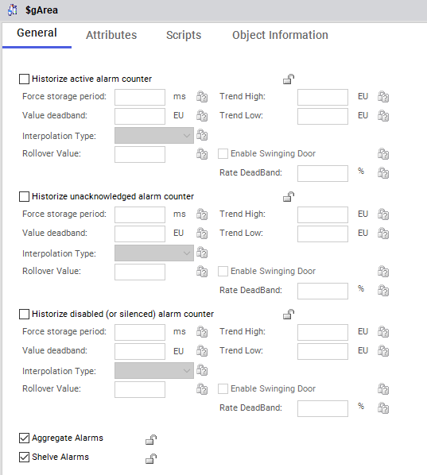
Monitoring Alarm State Information at Runtime
You can obtain runtime alarm state information using clients, such as Object Viewer or InTouch
Tag Viewer.
For example, you have configured a Galaxy with ProcessArea1 and ProcessArea2 contained in
Plant1. You have two tanks in each process area, with alarms configured on each tank. You can
watch the aggregated alarm severity counts at each containment level in Object Viewer.
Shelving Alarms
You can shelve alarms to temporarily hide them from displays for a fixed period. Alarms continue
to be historized, even when they are shelved.
Shelving typically is used to reduce alarm noise, or to temporarily suppress alarms that might be
triggered during system modifications or repairs, allowing you to focus on correcting other more
urgent alarms.
Shelving is similar to silencing an alarm, but shelved alarms differ from silenced alarms in the
following ways:
Shelved alarms have a built-in associated timeout. Shelved alarms are automatically
unshelved when the configured shelving period expires. You can also manually unshelve
alarms and return them to an active, displayed state.
Alarm shelving must be enabled at an area level, but shelving applies only to individual
alarms. You cannot shelve a hierarchy of alarms for an entire area or for an entire object.
You cannot propagate alarm shelving through the Model view hierarchy.
The system enforces role-based limitations on permission to shelve alarms, alarm severity
levels that can be shelved, and the total number of alarms a user can shelve.
The system tracks who shelved the alarm, from what workstation, the reason for shelving the
alarm, when shelving began, and when shelving will expire. Shelved alarms aggregate in similar
fashion to silenced alarms.
Enabling Alarm Shelving
Alarm shelving is configured from the IDE Configuration menu, and is enabled on the Area object.
Shelving Alarms at Runtime
Use a runtime client to shelve and unshelve alarms. From Application Server, you can use Object
Viewer to monitor and control shelved alarm attributes. From a Managed InTouch application, you
can use an embedded Alarm Control and at least one animation to write to the AlarmShelveCmd
attribute.
Graphics
Introduction
In this lab, for the purpose of notifying an operator of an alarm condition, you will enable the built-
in Alarm Border feature in the level meter graphic.
Objectives
Upon completion of this lab, you will be able to:
Enable alarm notifications for a graphic using the Alarm Border feature
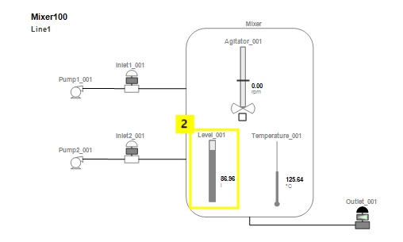
Enable the AlarmBorder Feature
First, you will configure the AlarmBorder wizard option for the Level_Detailed graphic.
1.
In the IDE, on the Graphics tab, in the Training toolset, open Level_Detailed for editing.
2.
On the canvas, right-click LevelMeter and select Custom Properties.
The list of Custom Properties appears, but there are no alarm properties. In the next steps,
you will add alarm features to the graphic.
3.
Click OK to close Edit Custom Properties.
4.
On the Properties tab, configure the properties as follows:
SymbolMode:
Advanced
AlarmBorder:
True
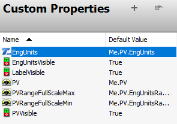
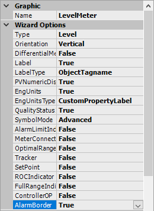
5.
Open Edit Custom Properties, and then verify that alarm properties have been added.
6.
Select the AlarmMostUrgentShelved property.
7.
In Default Value, enter Me.PV.AlarmMostUrgentShelved.
8.
Click OK to close Edit Custom Properties.
9.
Save and close and check in the graphic.
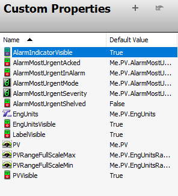
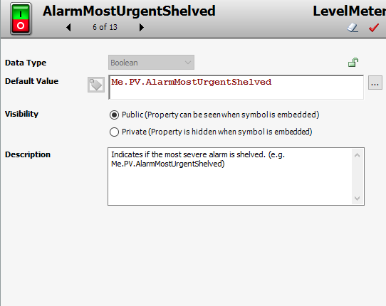
Test in Runtime
Now, you will test how alarm notifications are shown at runtime.
10. In WindowMaker, ensure the ContentDisplay window is open, and then click Runtime.
11. In the ContentDisplay window, observe the Alarm Border animations.
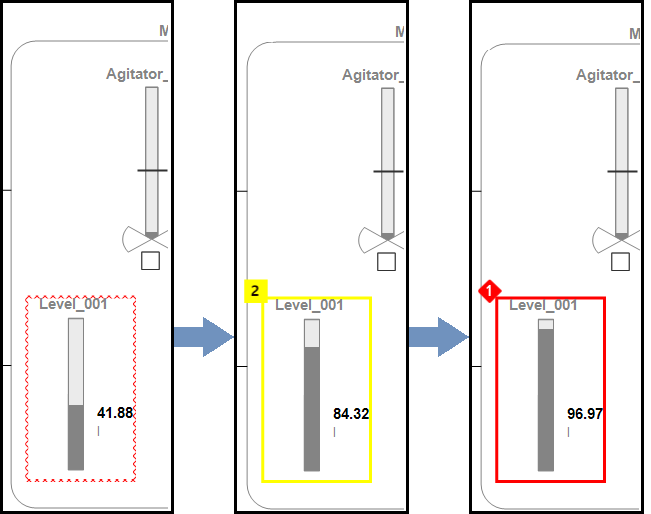
12. In the Navigation window, click Line 1 to navigate to the Line1 area, and then in the
ContentDisplay window, observe the Alarm Border animations.
13. Click Development! to return to WindowMaker.
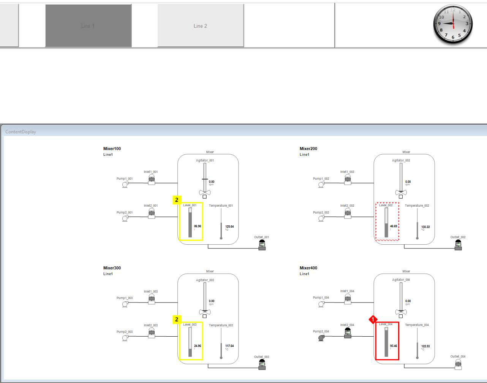
Overview
Introduction
In this lab, you will build an overview graphic to show alarm aggregation for the Production area.
This overview graphic will show a topology of the areas and objects using an SA_AlarmSeverity
symbol to represent each one.
Additionally, you will add an alarm severity indicator to your navigation buttons.
Optional steps are provided to add additional mixers to the overview graphic.
Objectives
Upon completion of this lab, you will be able to:
Use the SA_AlarmSeverity symbol to display alarm information and change alarm modes
Add alarm aggregation information to navigation buttons
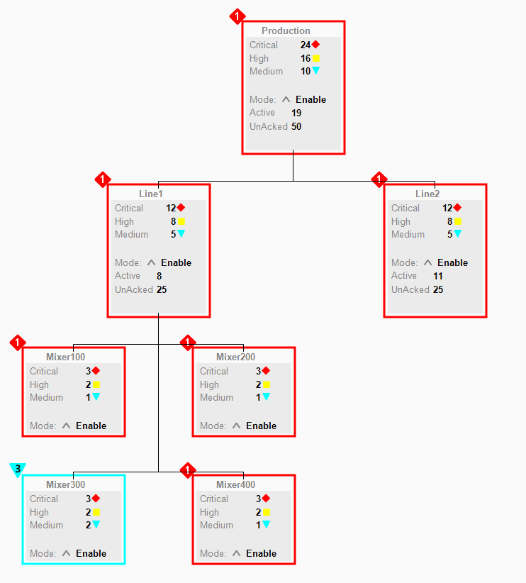
Add Alarm Severity Symbols to $gArea and $Mixer
First, you will create graphics in the $gArea and $Mixer templates using the AlarmPanel wizard
option. Then, in the SystemNavigation graphic, you will add an AlarmSeverityIndicator to some
buttons.
1.
In the IDE, on the Templates tab, in the Training\Global toolset, open the $gArea template
for editing.
2.
In the Object Editor, select the Attributes tab.
3.
In Content, click Add, name the symbol AlarmSeverityLabels, and then open it for editing.
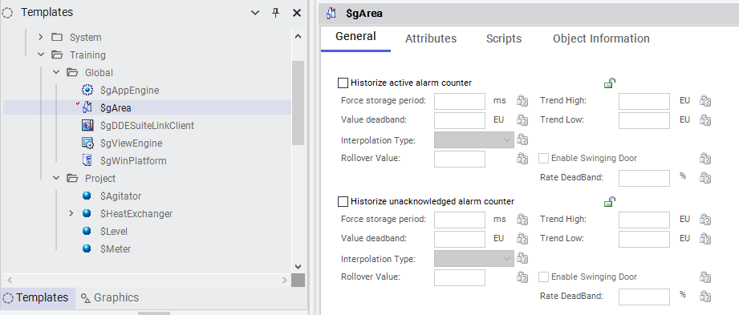
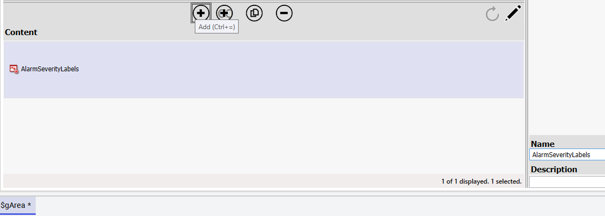
4.
On the Toolbox tab, search for severity, and then drag SA_AlarmSeverity to the canvas.
5.
On the Properties tab, set the Label property to False.
6.
Save and close the graphic.
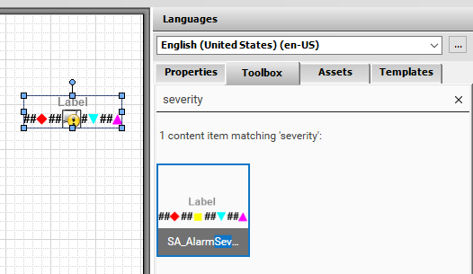
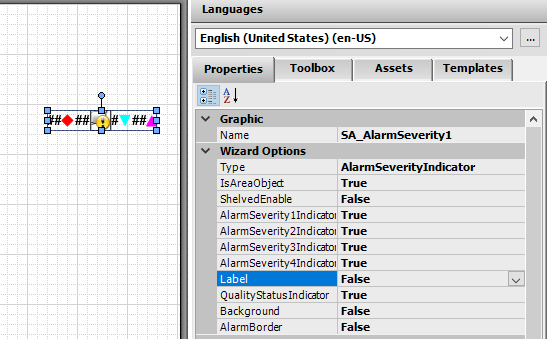
7.
In Content, click Duplicate, name the duplicate AlarmSeverityPanel, and then open it for
editing.
8.
On the canvas, select the graphic and configure properties as follows:
‘
9.
On the canvas, right-click the graphic and select Copy.
To save time, you will reuse this copy in later steps.
10. Save and close the graphic.
11. Save and close and check in the $gArea template.
Type:
AlarmPanel
Label:
True
LabelType:
ObjectTagname
Background:
True
AlarmBorder:
True
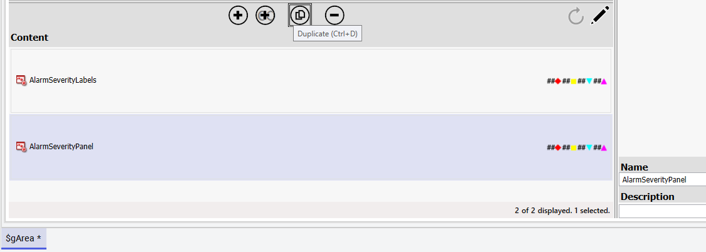
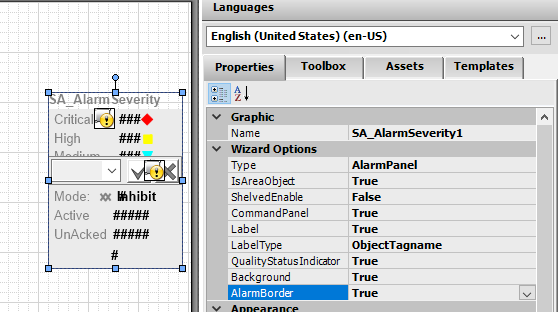
Next, you will add an alarm panel to the $Mixer template.
12. In the IDE, on the Templates tab, in the Training\Project template toolset, open the $Mixer
template for editing.
13. In Content, add a symbol named AlarmSeverityPanel, and then open it for editing.
14. On the canvas, right-click and select Paste.
15. Click the canvas to paste the graphic copied in an earlier step.
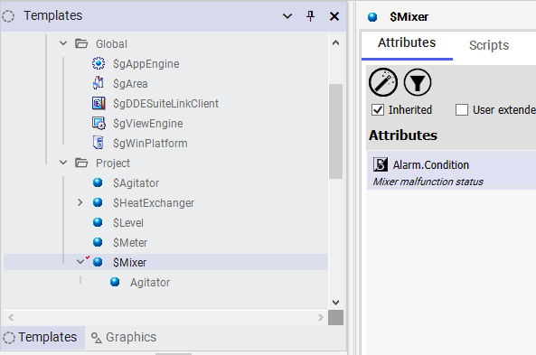
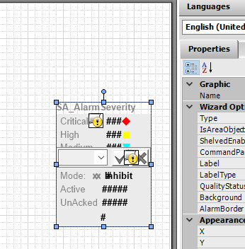
16. In Properties, set IsAreaObject to False.
The $Mixer automation object is not an area object.
17. Save and close the graphic.
18. Save and close and check in the $Mixer template.
Create the Alarm Overview Graphic
Next, you will create a graphic that will display Alarm Severity symbols from area and mixer
objects.
19. On the Graphics tab, in the Training toolset, create a symbol named
AlarmAggregationOverview, and then open it for editing.
20. On the canvas, right-click and select Embed Industrial Graphic.
21. From Instances, embed Production\AlarmSeverityPanel.
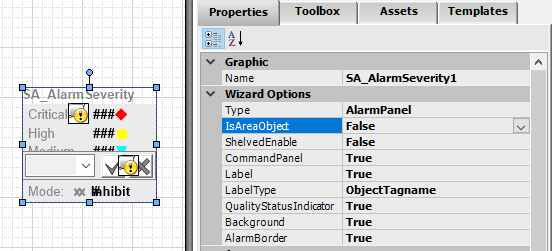
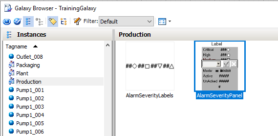
22. At the top-center of the canvas, click to place the graphic.
23. Embed AlarmSeverityPanel from the following Instances:
Line1
Line2
Mixer100
Mixer200
Mixer300
Mixer400
24. Use the alignment tools on the toolbar to arrange the graphics as shown below:
Production
Line1
Line2
Mixer100
Mixer200
Mixer300
Mixer400
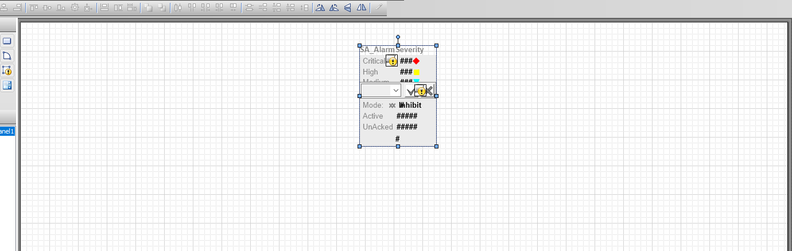
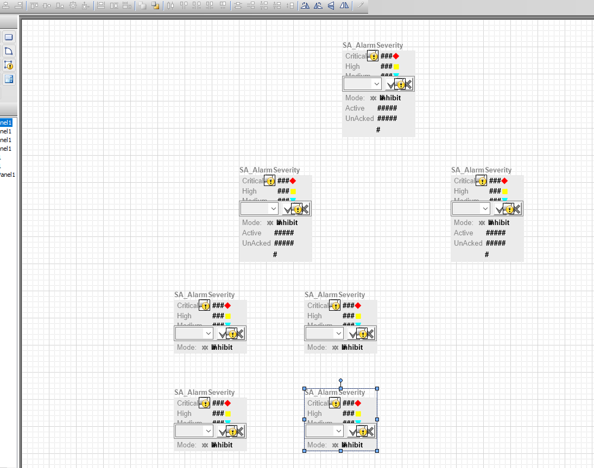
25. In Tools, double-click Connector.
26. To show the relationship of the hierarchical structure, click and drag connectors as shown
below:
27. In Tools, click Pointer to cancel the connector operation.
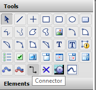
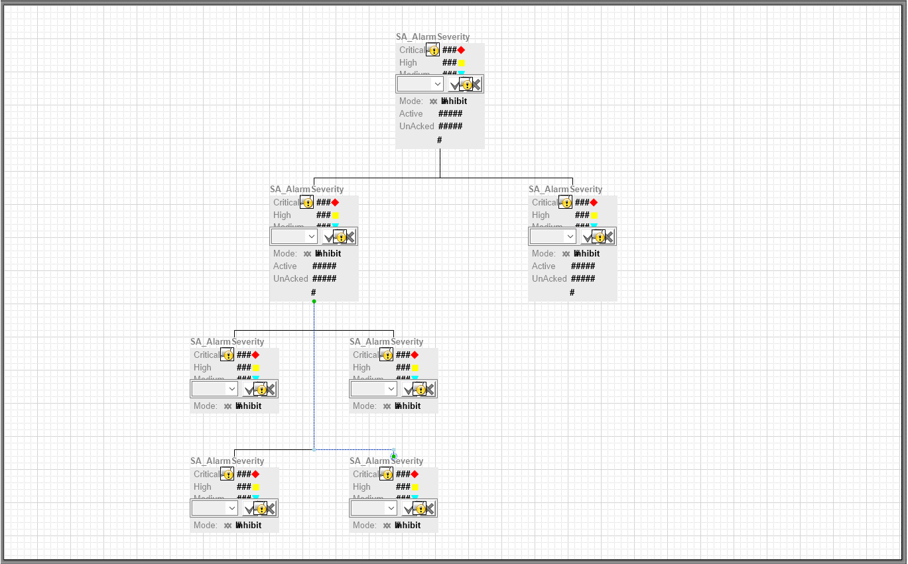
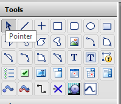
Review the sections above for the main topics, step-by-step procedures, and important configuration details.
This is part of the InTouch HMI layer, which integrates with Application Server's Galaxy for a complete visualization solution.
Module 5 — Alarms and Events Visualization. AVEVA InTouch for System Platform 2023 Training.
Next: Lesson L25 — Lab 13 – Alarm Aggregation